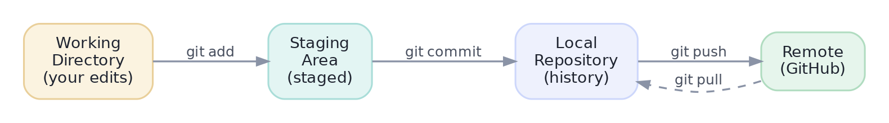

Version Control with Git & GitHub
Track every change, never lose work, and collaborate — the non-negotiable professional skill.
Git is not optional. It's your infinite undo button, the only sane way to work with other people, and — through GitHub — your public portfolio. A hiring manager who sees a green commit history and clean repos already half-believes you. More practically: the day you overwrite three hours of work, Git is the difference between "git checkout" and "start over." Learn the mental model once and it serves you for your whole career.
This is the whole thingThe mental model — four places your code lives
Almost every Git confusion dissolves once you can picture the four areas a change moves through. You edit in the working directory, stage the edits you want to keep together, commit them into permanent local history, and push that history to a remote like GitHub:

git add stages your chosen edits; git commit seals them into local history with a message; git push sends history to GitHub; git pull brings others' commits back. A commit is a snapshot, not a diff — you can always return to exactly how things were.Why the middle staging step exists: it lets you commit a coherent slice of your work ("fix the date parser") even if you also have unrelated half-finished edits open. Good history is made of small, self-contained commits — and staging is how you compose them.
90% of your Git lifeThe everyday loop
git status # what's changed / staged? (run this constantly)
git add churn_model.py # stage one file (git add -p to stage chunks)
git commit -m "Add churn baseline model" # seal it into history
git push # send commits to GitHub
git log --oneline -5 # recent history, one line each$ git status Changes not staged for commit: modified: churn_model.py $ git add churn_model.py $ git commit -m "Add churn baseline model" [main a1b2c3d] Add churn baseline model 1 file changed, 42 insertions(+) $ git push f4e5d6a..a1b2c3d main -> main
Write commit messages in the imperative — "Add ROC curve", "Fix leakage in pipeline" — as if completing the sentence "This commit will...". Small, frequent, well-labelled commits are a gift to future-you, who will one day need to find exactly when a bug crept in (git bisect makes that a two-minute search — but only if your history is clean).
Parallel universesBranches — work without fear
A branch is a cheap, isolated line of development. You make one to try an idea; if it works you merge it back into main, if it doesn't you delete it — main never saw the mess. On a team, everyone branches, and changes come together through pull requests (a request to merge, plus a place to review):
git checkout -b feature/add-xgboost # create + switch to a branch
# ... edit, add, commit as usual ...
git push -u origin feature/add-xgboost # push the branch to GitHub
# ... open a Pull Request on GitHub, get review, merge ...
git checkout main && git pull # come back, get the merged work$ git checkout -b feature/add-xgboost Switched to a new branch 'feature/add-xgboost' $ git push -u origin feature/add-xgboost * [new branch] feature/add-xgboost -> feature/add-xgboost
.gitignore & undoTwo files that save you
Never commit data, secrets, or virtual environments. A committed API key is a security incident (it lives in history forever, even if you delete it later); a committed 2 GB dataset bloats the repo for everyone. A .gitignore file lists what Git should ignore:
`` .env *.csv data/ .venv/ __pycache__/ .ipynb_checkpoints/ ``
Set this up before your first commit — un-committing something after it's in history is far harder than never adding it.
And the commands that turn a mistake into a shrug — matched to what you actually want:
- Discard un-staged edits to a file:
git restore file.py(back to the last commit). - Unstage something you
add-ed too early:git restore --staged file.py. - Undo a pushed commit safely:
git revert <hash>— it makes a new commit that reverses the old one, so shared history stays intact.
Prefer revert over reset for anything you've already pushed — rewriting shared history breaks your teammates' repos.
★ Key points to remember
- Git tracks four areas: working dir → staging (
add) → local history (commit) → remote (push). A commit is a snapshot you can always return to. - The daily loop is status → add → commit -m → push; run
git statusconstantly. - Branch for every new idea; merge good ones via a pull request; delete the rest —
mainstays clean. .gitignoredata, secrets (.env), and.venv/before your first commit — a committed secret lives in history forever.- Undo safely:
restoreworking edits,revertalready-pushed commits (neverresetshared history).
◆ Practice▸
Show solution & reasoning
git checkout -b feature/x to branch off main; make small commits as you work (add → commit -m); git push -u origin feature/x to publish the branch; open a pull request on GitHub; respond to review and push fixes (they update the PR); once approved, merge the PR into main; delete the branch; and locally git checkout main && git pull to sync the merged work. This keeps main always-working and every change reviewed.
Show solution & reasoning
Your local main is behind the remote. Pull first — git pull (which fetches their commits and merges, or rebases yours on top). If your changes and theirs touched the same lines, Git flags a merge conflict: open the marked files, choose the correct combined version, remove the <<<<<<< / ======= / >>>>>>> markers, git add the resolved files, complete the merge, and then git push. The rejection is Git protecting you from silently overwriting their work.
◎ Deep dive: merge vs. rebase, blame/bisect, and a workflow that scales from solo to team▸
Merge vs. rebase — two ways to combine history. git merge ties two branches together with a merge commit, preserving exactly what happened (branchy but truthful). git rebase replays your commits on top of the latest main, producing a linear, tidy history — at the cost of rewriting your commits' identities. The rule that keeps teams sane: rebase your own un-pushed local work to tidy it, but never rebase commits others may already have (it rewrites shared history and breaks their repos). When in doubt, merge.
Reading and bisecting history. git log --oneline --graph draws the branch structure; git blame file.py shows who last changed each line (and in which commit) — invaluable for "why is this here?"; and git bisect binary-searches your history to find the exact commit that introduced a bug, testing a handful of commits instead of hundreds. All three only work well if your commits are small and message-labelled — another reason commit hygiene pays off.
A realistic minimal workflow for solo projects. You don't need the full team ceremony to benefit: main for known-good work, a short-lived branch per experiment, commit early and often with real messages, push to GitHub as backup + portfolio, and a README that says how to run it. That alone puts you ahead of most self-taught candidates — and it scales smoothly to team work when you get there.
Expect "walk me through your Git workflow" and "how would you undo X?". Show the mental model (four areas), the branch-and-PR loop, and — the senior tell — that you revert pushed commits rather than rewrite shared history, and never commit data or secrets. Judgement about history and collaboration, not memorised flags, is what they're listening for.